MS Excel 基礎資料分析
航運資料前處理實戰指南
從零打底！海運提單、貨櫃清單、港口代碼與費用單據之資料清理、格式標準化、重複排查與分析前置技能全攻略。
為什麼航運行政人員必須精通「資料前處理」？
- 1. VGM 申報受阻：毛重欄位混雜「18,500 KGS」，Excel 視為文字無法加總，造成碼頭退關停裝。
-
2.
跨表比對失效：提單號碼包夾隱藏空白，VLOOKUP 回傳
#N/A，貨物誤送目的港。 - 3. 重複請款賠償：EDI 系統重複發送提單，未經排查導致重複開立運費發票爭議。
- 4. 合併儲存格災難：船名跨欄置中合併，導致無法排序、無法篩選、樞紐分析表癱瘓。
MS Excel 操作介面全景導覽
點選下方八大區域按鈕，即時檢視該區域在航運前處理中的關鍵功能與使用技巧：
① 標題列與快速存取工具列 (Title Bar & QAT)
防護與自保位於視窗最頂端。顯示檔案名稱與儲存狀態。左側快速存取工具列強烈建議設定「自動儲存」與「復原（Ctrl+Z）」。當誤刪提單或欄位錯位時，Ctrl+Z 是最快恢復原狀的神級救命鍵！
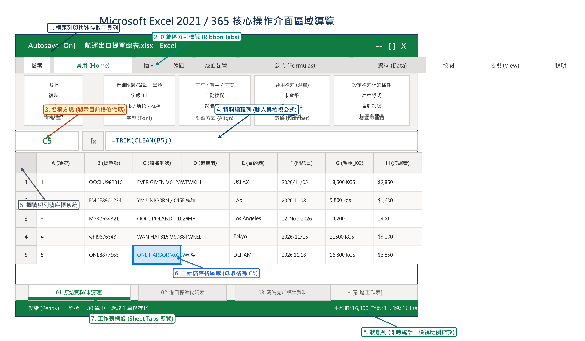
航運資料前處理「三大不可動搖守則」
永遠不在原始檔上動刀！匯入後第一動作必定是建立工作表複本（命名為 01_原始資料 與 02_清洗區）。
一列一筆記錄、一行一屬性、單一標題列！嚴格禁止跨欄合併儲存格，禁止在中間插入小計列。
文字預設靠左；數值與真日期預設靠右。日期底層是數值序號，靠左代表是無法計算的文字！
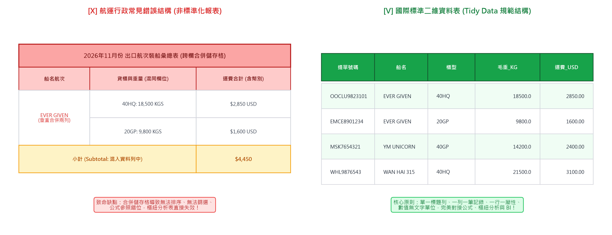
航運常見八大「髒資料」特徵診斷表
點擊任意缺陷卡片，檢視典型海運案例與標準解法：
前後多餘空格 (Leading & Trailing Spaces)
文字清洗肉眼難以察覺，但 VLOOKUP 比對時會視為不同字串，回傳 #N/A 錯誤導致目的港無法對應！
=TRIM(A2) 或在【尋找與取代】中清除首尾多餘空白。
航運資料前處理黃金標準作業流程 (SOP)
標準化五步管線架構，確保每筆資料皆能無痛轉化為可分析標準庫：
原始工作表複製
建立 Raw Data 複本，鎖定原檔，嚴禁直接動刀。
唯一性與凍結窗格
凍結首列、啟用篩選，依提單+櫃號移除重複項。
TRIM & 代碼標準化
TRIM 去空白、UPPER 轉大寫，對照表配對港口。
剔除單位與日期修復
取代 KGS/USD，乘 1 消滅綠三角，資料剖析轉 YMD。
缺漏補齊與品質驗收
IF/ISBLANK 補註記，設定格式化條件抓漏，對帳封存。
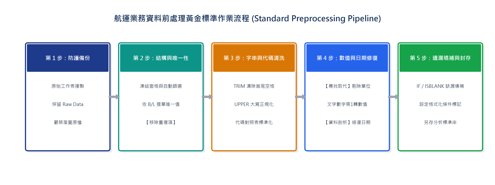
30 筆真實航運示範資料集診斷
本資料集涵蓋長榮、陽明、萬海、OOCL 等進出口貨物提單清冊。點選上方按鈕可即時高亮標記潛藏的各種缺陷：
| No | 提單號碼 (B/L) | 船名航次 (需拆分) | 櫃型 | 裝貨港 | 卸貨港 | 開航日 (ETD) | 毛重 (Gross Wt) | 海運費 (USD) | 狀態 |
|---|
實戰示範——Excel 內建選單清理技巧 (一)
凍結首列與啟用自動篩選
【檢視】->【凍結首列】向下滾動時欄位永遠可見。
按下快捷鍵 Ctrl + Shift + L 啟動篩選器下拉鈕，是檢驗俗稱與空格的最速工具！
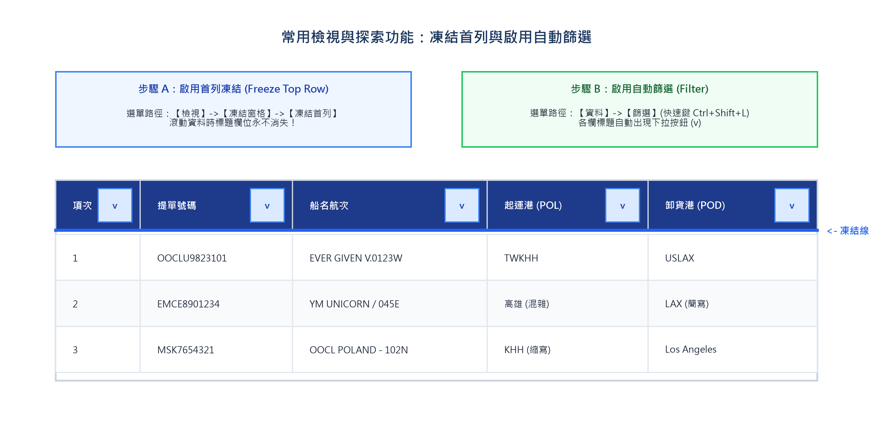
尋找與取代剔除單位字尾
按下快捷鍵 Ctrl + H。
尋找目標輸入 KGS 或 $，取代為保持完全空白，點選【全部取代】，十秒清除所有文字干擾！
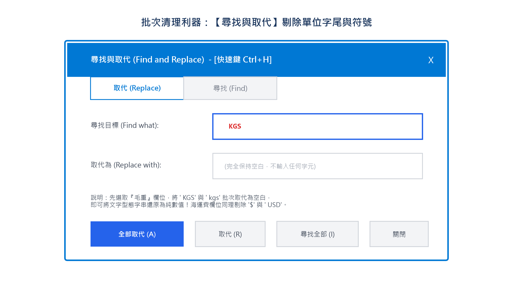
資料剖析拆分「船名與航次」
【資料】->【資料剖析】。
選【分隔符號】-> 勾選【空格】或輸入斜線『/』-> 指定目標儲存格，一分為二獨立為「船名」與「航次」！
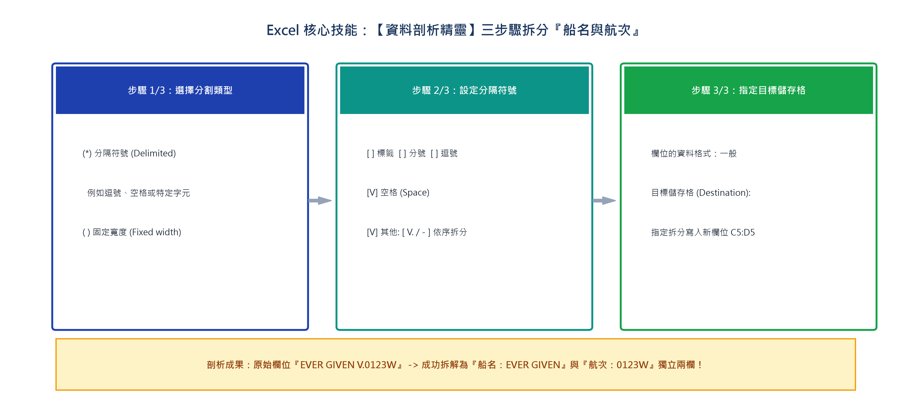
實戰示範——Excel 內建選單清理技巧 (二)
資料剖析修復「文字型日期」
選取日期欄位 ->【資料剖析】-> 連按兩次下一步進入第 3 步 ->【日期】選 YMD -> 完成！無論點號或英文月瞬間轉為真日期序號！
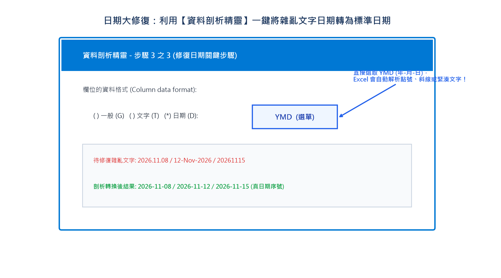
移除重複項 (雙鍵值設定)
Ctrl+A 全選 ->【資料】->【移除重複項】。
先點選【全不選】，僅單獨勾選【提單號碼】與【貨櫃號碼】，成功排查重複列！
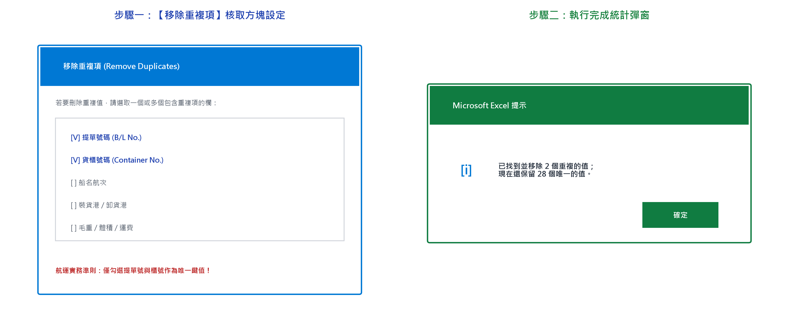
選擇性貼上(乘1) 消滅綠三角
在任一空格輸入 1 複製 -> 選取文字數字範圍 -> 右鍵【選擇性貼上】-> 運算選【乘】！瞬間強制將文字數字轉回右對齊真數值！
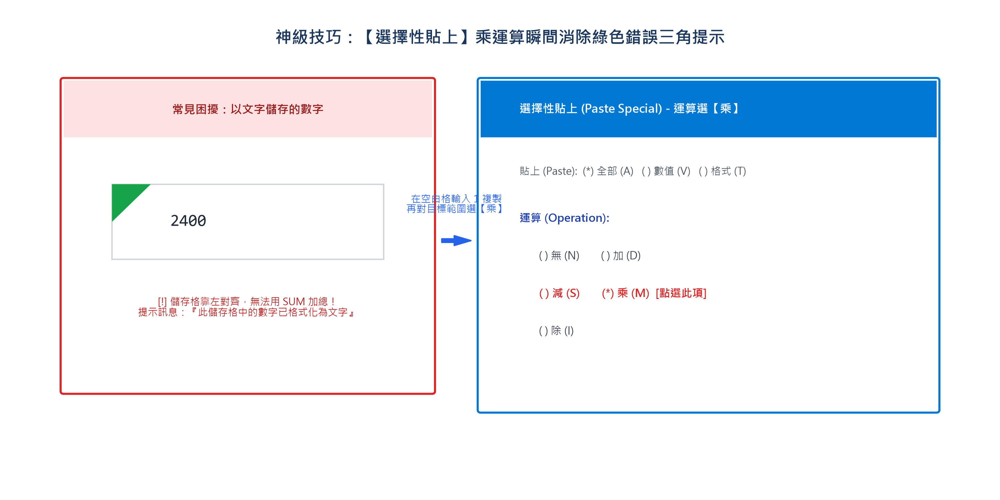
功能 7：設定格式化的條件 (Conditional Formatting)
【醒目提示儲存格規則】->【重複的值】高亮紅色；【特殊目標】->【空格】高亮黃色，缺陷一眼看穿！
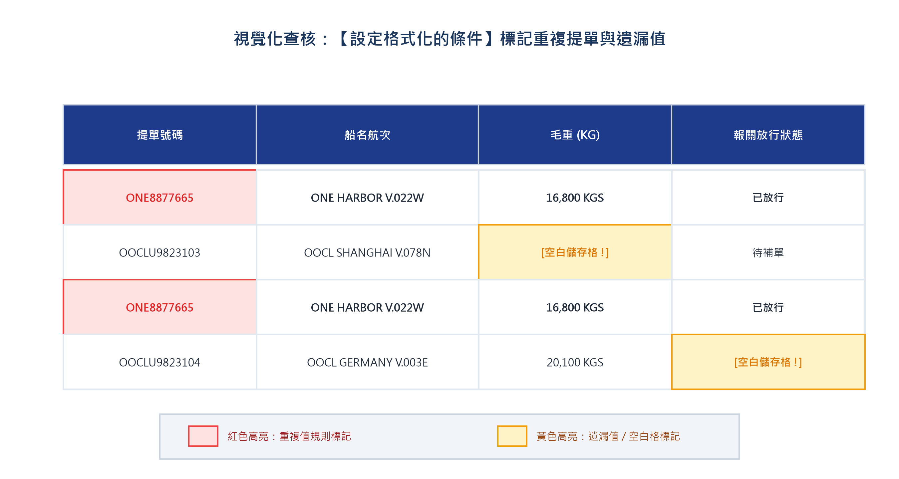
實戰示範——核心清洗函數與公式管線 (一)
文字清洗三劍客：TRIM + CLEAN + UPPER
必背公式=UPPER(TRIM(CLEAN(B2)))
字串截取手術刀：LEFT / RIGHT / MID / FIND
進階拆解EMCU1234567 截取前 4 碼船公司碼 ➜ EMCU
7
123456
=SUBSTITUTE(D2, "V.", "") 快速剔除航次前的雜亂縮寫！
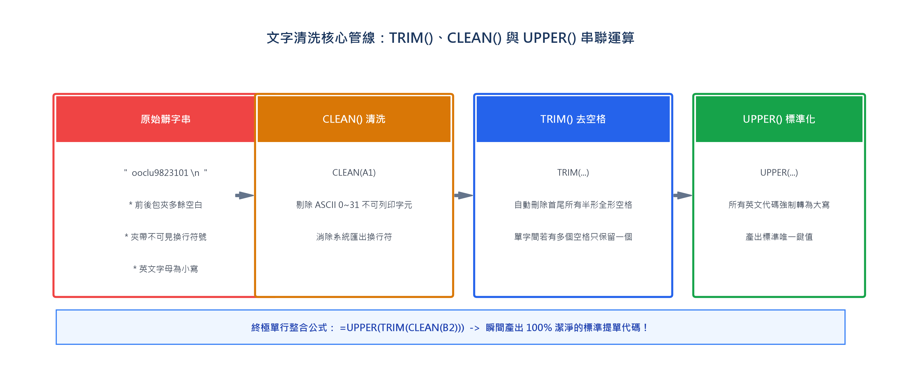
實戰示範——核心清洗函數與公式管線 (二)
跨表代碼標準化大師：VLOOKUP / XLOOKUP
含金量最高
透過參照『港口標準代碼表』，將「高雄、KHH、Kaohsiung」統一轉換為聯合國五字碼 TWKHH：
=VLOOKUP(F2, 代碼表!$A$2:$C$12, 2, FALSE)
$A$2:$C$12，參數填 FALSE 代表完全精準匹配！
數值日期重構與遺漏防呆：VALUE / DATE / IF
邏輯重構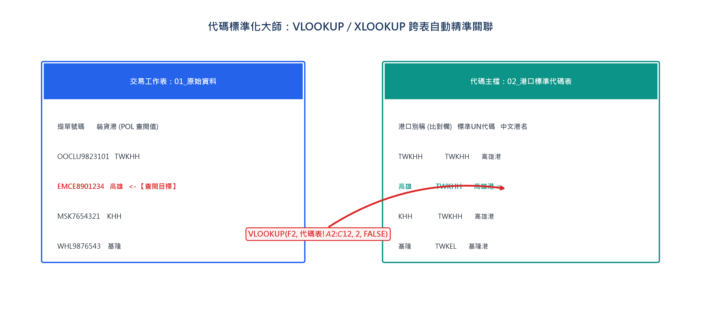
300 筆多情境航運案例挑戰題庫
四大海運業務板塊結構 (300 筆分佈)
任務驗收五大指標規格書 (KPI Check)
- 1. 重複提單排查率 100% 300 ➜ 285 筆
- 2. 提單與櫃號大寫無空格 100% 正規化
- 3. 裝卸港轉 UN/LOCODE 100% 標準碼
- 4. 重量運費單位完全分離 純數值可加總
- 5. 日期統一 YMD 且天數正值 無負值邏輯正確
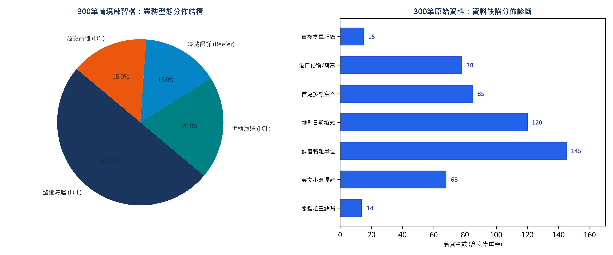
300 筆情境練習題關鍵指標查核對帳表
完成練習後，請對照下列驗收指標。加總完全吻合即代表通過企業級資料前處理檢定：
| 檢核項目 | 未清洗原始數據 (Raw) | 清洗完成驗收數據 (Cleaned) | 品質判定與查核說明 |
|---|---|---|---|
| 總資料筆數 (Rows) | 300 筆 | 285 筆 | 成功移除 15 筆重複拋轉提單 (合格 ✓) |
| 總毛重加總 (Total GW) | 無法計算 (SUM=0) | 4,749,200.0 KG | 清除 KGS，空值依櫃型平均填補 (合格 ✓) |
| 總海運費加總 (Total Frt) | 無法計算 (帶有$與USD) | $ 735,450.00 USD | 乘 1 消除綠三角，純數值加總 (合格 ✓) |
| 總計費材積 (Total CBM) | 無法計算 (帶有CBM字串) | 10,958.4 CBM | 單位分離完成，型態為浮點數 (合格 ✓) |
| 裝貨港 (POL) 標準化 | 38.2% (中文俗稱混雜) | 100.0% (UN/LOCODE) | VLOOKUP 成功自動轉換 (合格 ✓) |
| 卸貨港 (POD) 標準化 | 41.5% (別名混雜) | 100.0% (UN/LOCODE) | VLOOKUP 成功精準匹配 (合格 ✓) |
| 日期格式標準化率 | 26.0% (四種格式混雜) | 100.0% (YYYY-MM-DD) | 資料剖析修復為真日期序號 (合格 ✓) |
互動式前處理沙盒 ＆ 航運知識小測驗
輸入任意帶有空格、換行或小寫的字串，即時體驗公式運算：
Q1. 儲存格左上角出現「綠色錯誤三角提示」且數字靠左，應如何最快修復為真數值？
Q2. 航運提單清冊中，為何全面禁止使用「跨欄置中合併儲存格」？
c:\shipping_tutorial\